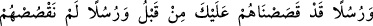
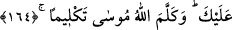

tarafından Hz. Îsâ’ya revâ görülen iftirâları ve ona nisbet edilen bayağı ifadeleri
bastırmak husûsunda daha tesirlidir.
“Dâvûd’a da Zebur’u verdik.” Buradaki “verdik” ifâdesi, “vahyettik” anlamındadır.
Çünkü, Zebur’un verilmesi vahiy yoluyla olmuştur. Zebur, dört büyük ilâhî kitaptan
biridir. “Zebr”den türemiştir ve “yazmak” demektir.
Kurtubî der ki: Zebur’da yüz elli sûre vardı ve bunlar içinde ahkam âyetleri yoktu.
Zebur’da hikmetli sözler, kıssalar, Allah’a hamd ve senâyı öğreten âyetler vardı. Dâvûd
(a.s.), çöle çıkar ve Zebur’dan âyetler okurdu. Arkasında İsrailoğullarının âlimleri,
onların arkasında diğer insanlar, insanların arkasında cinler dururlardı. Hatta dağlardaki
hayvanlar bile Dâvûd (a.s.)’ın sesini duyduklarında, onun nağmesini dinlemek için gelir,
önünde bekleşirlerdi. Bundan başka sayılarını ancak Allah’ın bildiği sürü sürü kuşlar
da onu gölgelemek için çırpınırlardı. Yırtıcı hayvanlar da toplanırlar onun sesinin
câzibesiyle etrâfını kuşatırlardı. Dâvûd (a.s.), Cebrâil’in bu konuda vahiy getirmesini
beklemeden Oryâ’nın hanımı ile evlendi. İşte bundan sonra etrafında toplanan insanlar,
cinler, hayvanlar ve kuşlar artık görünmez oldu.
Denildi ki, önceleri görülen coşku Allah’a itâate ünsiyet etmenin güzel bir sonucu idi.
Sonradan meydana gelen yalnızlık ise, masiyetin neticesidir.
Ebû Mûsâ’l-Eş’arî (r.a.)’ın şöyle dediği rivâyet edilmiştir: “Rasûlullah (s.a.v.) bana
hitaben şöyle buyurdular: “Dün gece beni bir görseydin. Senin Kur’an okuyuşunu
dinliyordum. Sana Dâvûd âilesinin nağmelerinden bir nağme verilmişti.” Ben de:
“Allah’a yemin olsun ey Allah’ın Rasûlü, eğer senin dinlediğini bilseydim, daha güzel
okurdum.” dedim.[209]
Ebû Osman’ın şöyle dediği rivâyet edilir: “Ebû Mûsâ’nın sesinden daha etkileyici bir
ses, onun nağmelerinden daha büyüleyici bir nağme ve onun okuyuşundan daha güzel bir
kırâat duymadım. O, bize bâzen sabah namazı kıldırırdı. Biz, o güzel sesiyle Bakara
sûresini okusun isterdik.”
Sa’dî (k.s.) şöyle der:
Hoş bir ses güzel yüzden daha iyidir
Çünkü güzel yüzden nefis hoşlanır, sesten ruh beslenir
Koruluğa tatlı rüzgar esince
Ban (sürgün) ağacının dalları eğilir, sert taş değil
164- Bir kısım peygamberleri sana daha önce anlattık, bir kısmını ise sana
anlatmadık. Ve Allah Mûsâ ile gerçekten konuştu.